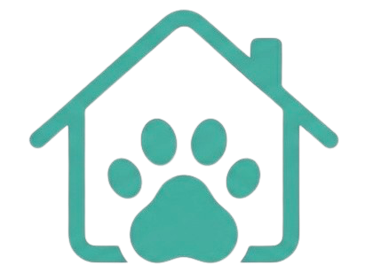
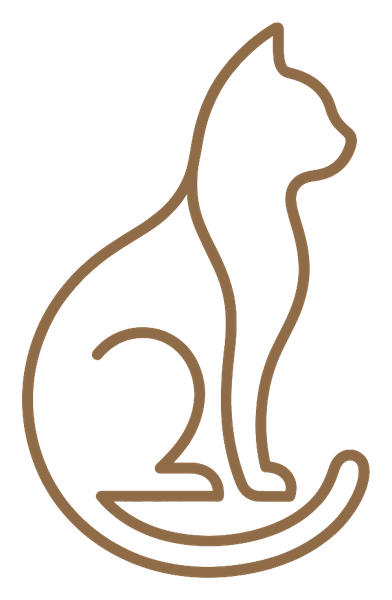
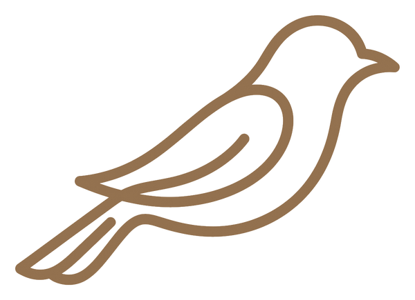

Pet Profile
約 5 分鐘・填得越細，照顧計畫越貼近牠的日常
從最基本的開始——種類會決定我們接下來問什麼。


請先選擇寵物種類
請告訴我們牠的名字
健康資訊只用於照顧安排與緊急應變，我們依隱私權政策嚴格保護。
這一步最重要——牠的脾氣與地雷，決定保姆用什麼方式靠近牠。
照牠原本的節奏來——我們配合牠，不是牠配合我們。
進出方式與環境細節，是安全照顧的第一步。所有資訊僅服務保姆與客服可見。
送出後 24 小時內，專人與你聯繫安排免費視訊認識。
請填寫姓名、手機、服務地區，並勾選同意條款
我們已收到寵物檔案。專人將於 24 小時內與你聯繫，安排免費 15 分鐘視訊認識——見到牠之前，我們會先讀熟牠的一切。
🔒 此為原型示意，表單內容不會被送出或儲存